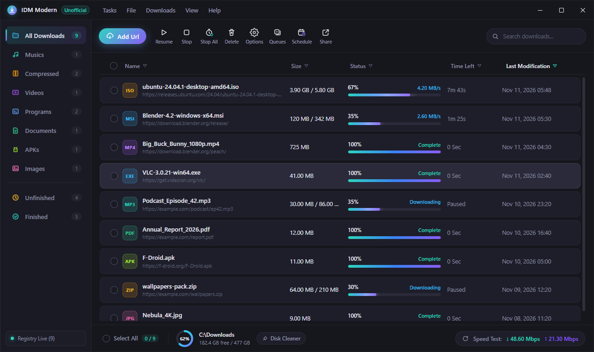
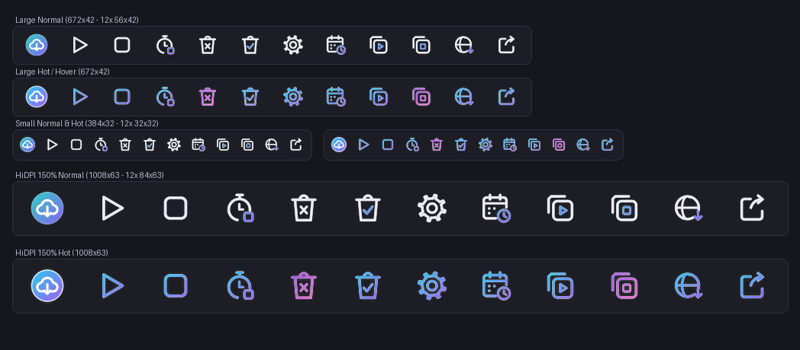
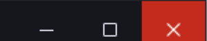

ظاهر مدرن و تیره برای IDM
A modern dark look for IDM
یک رابط کاربری جدید با دکمههای پنجرهی ویندوزی، بههمراه تم آیکون تولبار برای خود Internet Download Manager. رایگان، متنباز و غیررسمی.
A new UI with Windows-style window buttons, plus a toolbar icon theme for Internet Download Manager itself. Free, open source and unofficial.

دو بخش، جدا از هم
Two parts, use either one
۱. IDM Modern (برنامهی جدا)
1. IDM Modern (separate app)
لیست دانلودهای IDM را زنده از رجیستری ویندوز میخواند و نشان میدهد: دستهبندی، جستجو، نوار پیشرفت، فضای دیسک و تست سرعت. افزودن دانلود و صفها را به خود IDM میسپارد، پس اتصال به مرورگر و همهچیز مثل قبل کار میکند.
Reads IDM's download list live from the Windows registry: categories, search, progress bars, disk space and a speed test. Adding downloads and queues is handed to IDM itself, so browser capture and everything else keeps working.
۲. تم تولبار UIUXMonster Dark
2. UIUXMonster Dark toolbar theme
۱۲ آیکون تازه برای تولبار خود IDM در سه اندازه (عادی، کوچک و HiDPI)، با حالت hover رنگی. با Dark Mode خود IDM عالی به نظر میرسد.
12 new icons for IDM's own toolbar in three sizes (normal, small and HiDPI), with coloured hover states. Looks best with IDM's built-in Dark Mode.

ویژگیها
Features
دکمههای ویندوزی
Windows buttons
کوچککردن، بزرگکردن و بستن در گوشهی راست، دقیقاً مثل ویندوز ۱۱؛ بستن با hover قرمز.
Minimize, maximize and close on the right, just like Windows 11, with the red close hover.

دادهی واقعی IDM
Real IDM data
همان دانلودهای IDM؛ هر ۱۵ ثانیه تازه میشود. باز کردن فایل، پوشه، کپی لینک و دانلود دوباره.
Your actual IDM downloads, refreshed every 15 seconds. Open file or folder, copy the link, redownload.
بدون نصب
No install
فایل zip را باز کنید و IDM Modern.exe را اجرا کنید. Node.js لازم نیست.
Unzip and run IDM Modern.exe. No Node.js needed.
دست به IDM نمیزند
Leaves IDM untouched
هیچ فایلی از IDM تغییر نمیکند؛ امضای دیجیتال و آپدیتها سالم میمانند.
No IDM file is modified, so its signature and updates stay intact.
نصب
Install
IDM Modern
- IDM باید نصب باشد.
IDM-Modern-win-x64.zipرا دانلود و باز کنید.IDM Modern.exeرا اجرا کنید. اگر Windows SmartScreen هشدار داد: More info ← Run anyway.
- IDM must be installed.
- Download and unzip
IDM-Modern-win-x64.zip. - Run
IDM Modern.exe. If Windows SmartScreen warns: More info → Run anyway.
تم تولبار
Toolbar theme
- zip را باز کنید و روی
install.ps1راستکلیک ← Run with PowerShell. - IDM را از منوی Tasks ← Exit کامل ببندید و دوباره باز کنید.
- View ← Toolbar ← UIUXMonster Dark را انتخاب کنید و View ← Dark Mode support را روشن کنید.
- Unzip, right-click
install.ps1→ Run with PowerShell. - Fully close IDM with Tasks → Exit, then open it again.
- Pick View → Toolbar → UIUXMonster Dark and turn on View → Dark Mode support.
این پروژه غیررسمی است و هیچ ارتباطی با شرکت Tonec (سازندهی IDM) ندارد. «Internet Download Manager» و «IDM» علامت تجاری صاحبشان است.
This is an unofficial project, not affiliated with or endorsed by Tonec Inc. (makers of IDM). "Internet Download Manager" and "IDM" are trademarks of their owner.